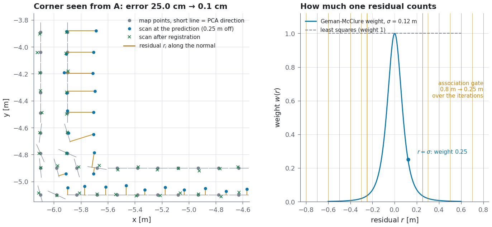
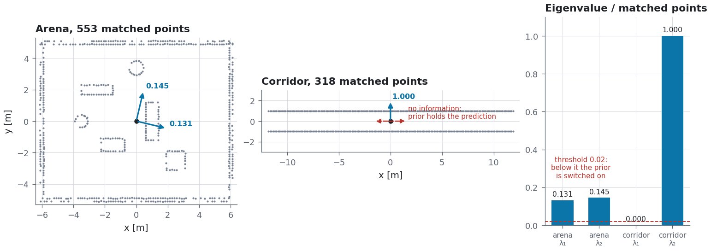
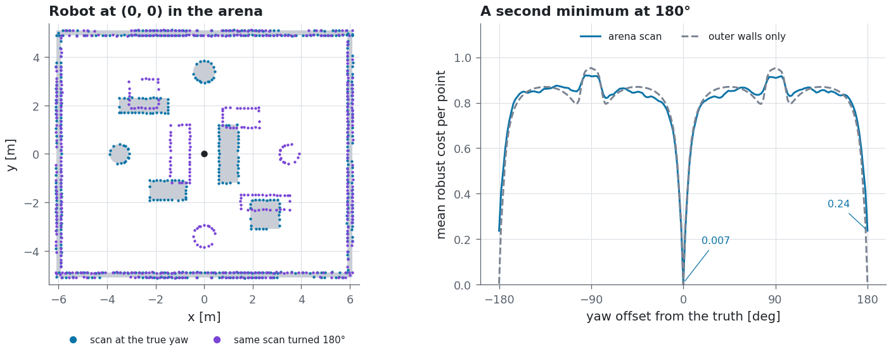

Deep dive · module 11
State estimation: the scan registration step
Objective
Write down the registration that lidar_odom.py runs on every scan (step 4 of
chapter 9, Task 2.2): point-to-line Gauss-Newton with
Geman-McClure weights, the yaw held at the gyro prediction, and a prior that acts only along directions the scan does not
constrain. After this module you can say which term stops the pose sliding in a corridor and why it is zero in the arena.
Prerequisites
Module 00 (SE(2), Gauss-Newton, robust weights) and chapter 9, Tasks 2.1 and 2.2. Python with NumPy and SciPy; no ROS needed for the tests.
Theory
Scan point $\mathbf s_i$ is matched to map point $\mathbf p_j$ with PCA normal $\mathbf n_j$ (eight neighbours) and line weight $c_j$ (walls count more than blobs). With yaw $\psi$ fixed, each iteration solves for the translation $\mathbf t$:
$$ r_i = \mathbf n_j^\top\left(R(\psi)\,\mathbf s_i + \mathbf t - \mathbf p_j\right), \qquad w_i = c_j\left(\frac{\sigma^2}{\sigma^2 + r_i^2}\right)^2, \quad \sigma = 0.12\ \text{m} $$
$$ H = \sum_i w_i\,\mathbf n_j\mathbf n_j^\top + P, \qquad \mathbf g = \sum_i w_i\,r_i\,\mathbf n_j + P\,(\mathbf t - \hat{\mathbf t}), \qquad \Delta\mathbf t = -H^{-1}\mathbf g, \qquad P = \sum_{k\,:\,\lambda_k / N < 0.02} 10\;\mathbf v_k\mathbf v_k^\top $$
$\hat{\mathbf t}$ is the predicted translation, $N$ the number of matches, and $\lambda_k, \mathbf v_k$ the eigenpairs of $\sum_i w_i\,\mathbf n_j\mathbf n_j^\top$. Dividing by $N$ makes the degeneracy test independent of the point count (Zhang et al., ICRA 2016). In the arena both eigenvalues are about 90 to 100 over roughly 740 points (0.13 per point), so the prior is inactive; in a corridor the along-wall eigenvalue is 0 and the prior stops the pose from sliding. The reported covariance is $\mathrm{rms}(r)^2 H^{-1}$.

Point-to-line residuals on the synthetic arena scan of test_registration.py from A with the unit test's 25 cm prediction
error; registration ends 0.1 cm from the truth.

Degeneracy test on the unit-test geometry: in the arena (robot at the origin, 553 matched points) both directions carry 0.131 and 0.145 per point; in the corridor (318 points) the along-wall direction carries 0, so only there the prior acts.
Implementation
This module has no code of its own: the method is the stack's src/go2_nav_sim/scripts/registration.py, and the tests are
src/go2_nav_sim/test/test_registration.py.
| Equation | Where in registration.py |
|---|---|
| normals $\mathbf n_j$ and line weight $c_j$ | LineMap.__init__ (PCA over k=8 neighbours) |
| $r_i$, $w_i$ | register, the res and w lines (Geman-McClure, sigma=0.12) |
| eigenpairs and $P$ | register, np.linalg.eigh(H[:2, :2]) and the Pr line (trans_prior=10.0, deg_eig=0.02) |
| $\Delta\mathbf t$ with $\psi$ fixed | register, the fix_yaw branch; fix_yaw=False solves the full SE(2) step |
| covariance | register, the last two lines |
Association uses a gate that shrinks from 0.8 m to 0.25 m over the 12 iterations, so a 25 cm prediction error is still matched in the first iterations.
Experiment
python3 -m pytest -q src/go2_nav_sim/test/test_registration.py
.......... [100%]
10 passed in 0.56s
The scans are synthetic: the arena walls and obstacles from make_arena.py, seen from a pose, with 1 cm range noise
(scan_from in the test file, fixed seed 0).
Validation
| Test | Asserted |
|---|---|
test_translation_recovered_with_yaw_fixed (3 poses) |
a 25 cm offset recovered to under 2 cm |
test_full_se2_recovers_rotation_and_translation |
fix_yaw=False recovers 0.05 rad |
test_robust_to_twenty_percent_outliers |
20 % clutter moves the result by at most 3 cm |
test_reports_failure_when_scan_does_not_overlap_map |
no overlap is reported as a failure |
test_corridor_prior_stops_sliding_but_corrects_across |
the corridor prior holds the along-wall estimate and corrects across |
test_gyro_yaw_is_independent_of_arrival_order |
gyro integration does not depend on callback timing |
test_returns_a_covariance_that_shrinks_with_information |
the covariance is positive definite and its root trace is under 1 cm |
test_tilt_compensated_yaw_rate |
at 3.6° roll the tilt-compensated yaw rate is exact; z alone reads 0.2 % low |
Failure analysis
The full SE(2) solve can settle in the 180° flipped solution of the rectangular room. This is why the stack fixes yaw at the gyro prediction; chapter 9 has the run in which it happened.

Mean robust cost of the synthetic scan at (0, 0) over yaw offsets: 0.007 at the truth, 0.24 at 180°, and 0.004 at 180° for the outer walls alone.
The degeneracy threshold of 0.02 per point was chosen from two synthetic cases (arena and corridor), not calibrated on real data. A first version that applied the prior in every direction biased the result: with the prediction 25 cm off it landed 2.5 cm short, against 1 to 2 mm without the prior.
References
- J. Zhang, M. Kaess, S. Singh, "On degeneracy of optimization-based state estimation problems", ICRA 2016, section III (eigenvalues of the information matrix as the degeneracy test).
- Module 00,
optim.py: IRLS with the Cauchy kernel; Geman-McClure differs only in the weight function above.